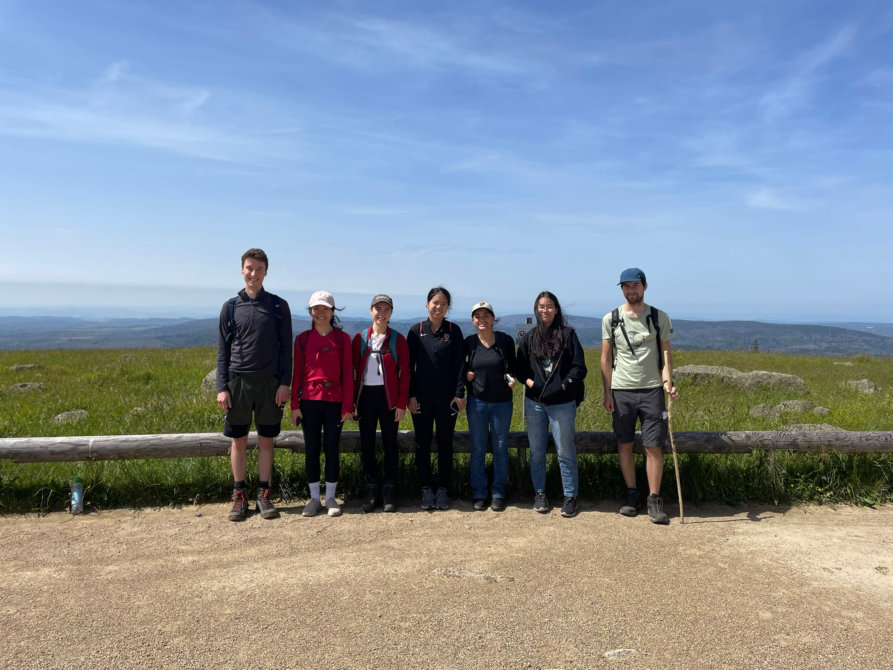

We are the independent Max Planck Research Group on Turbulence and Wind Energy at the Max Planck Institute for Dynamics and Self-Organization in Göttingen, Germany.
Our research mission
Decarbonising global energy generation is one of the greatest challenges facing humanity, and transformative advances in any renewable energy technology require a profound understanding of the underlying science. Wind turbines operate in highly turbulent atmospheric flows. Both the local meteorological conditions and the arrangement of turbines in a farm significantly impact power production. However, neither their interactions with one another nor with the surrounding flow field are well understood. We study the fundamental fluid dynamics of wind power generation. Using the unique experimental facilities at the Max Planck Institute for Dynamics and Self-Organization, we combine laboratory experiments and field measurements to optimise wind energy from the blade scale to the farm scale.

If you are interested in joining our group, please see the contact page for open positions or reach out to claudia.brunner(at)ds.mpg.de!